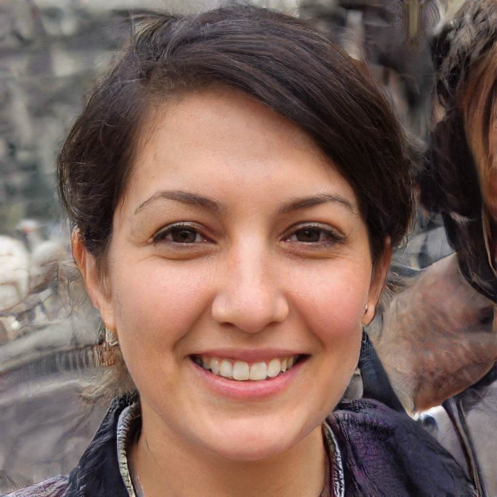
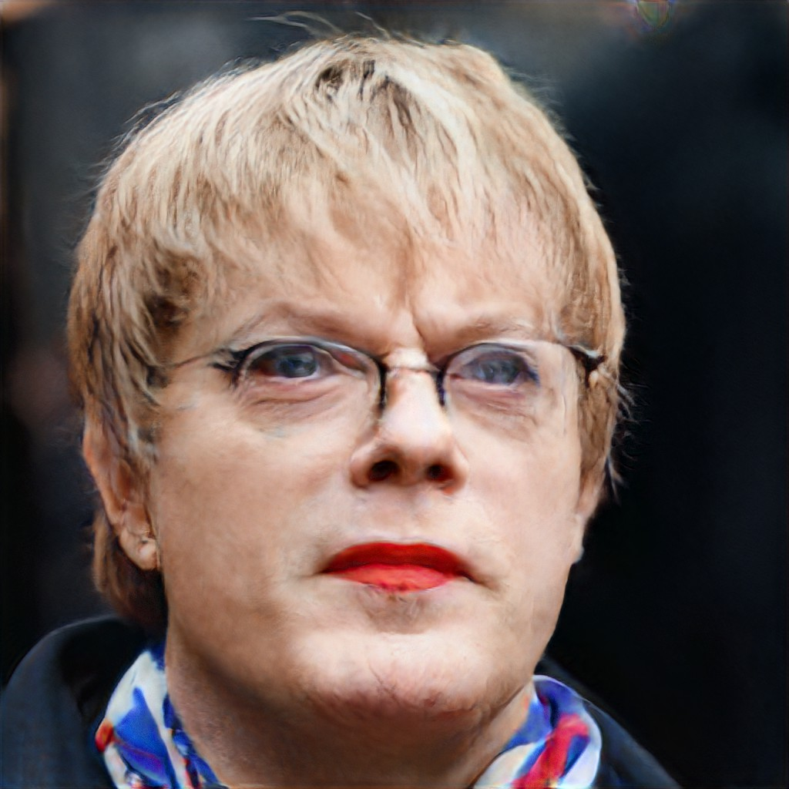
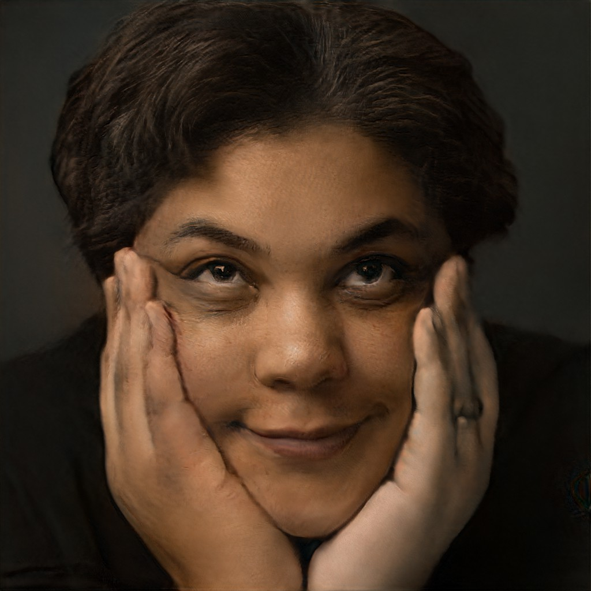
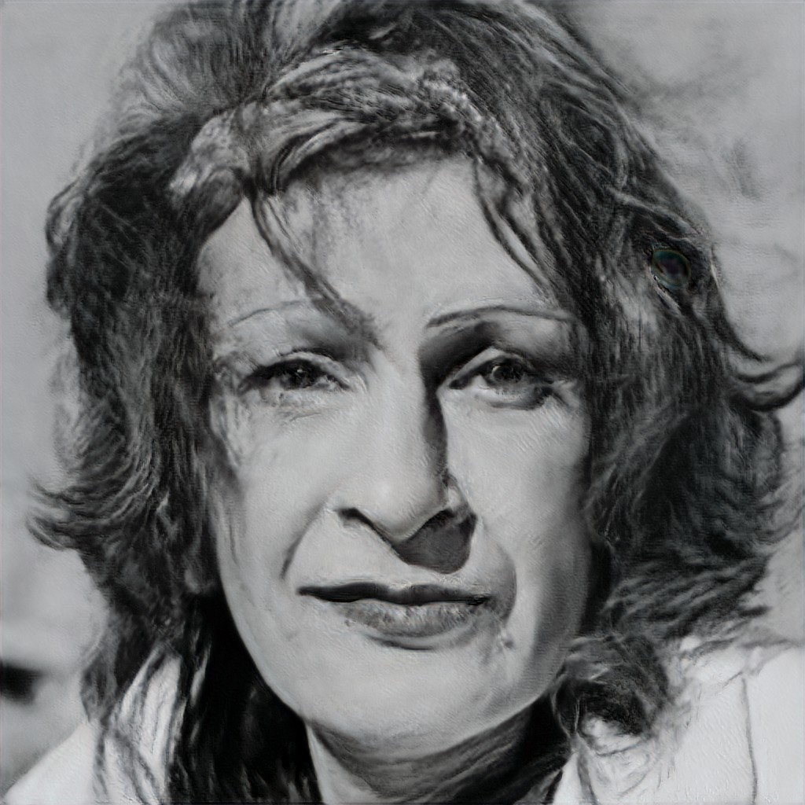
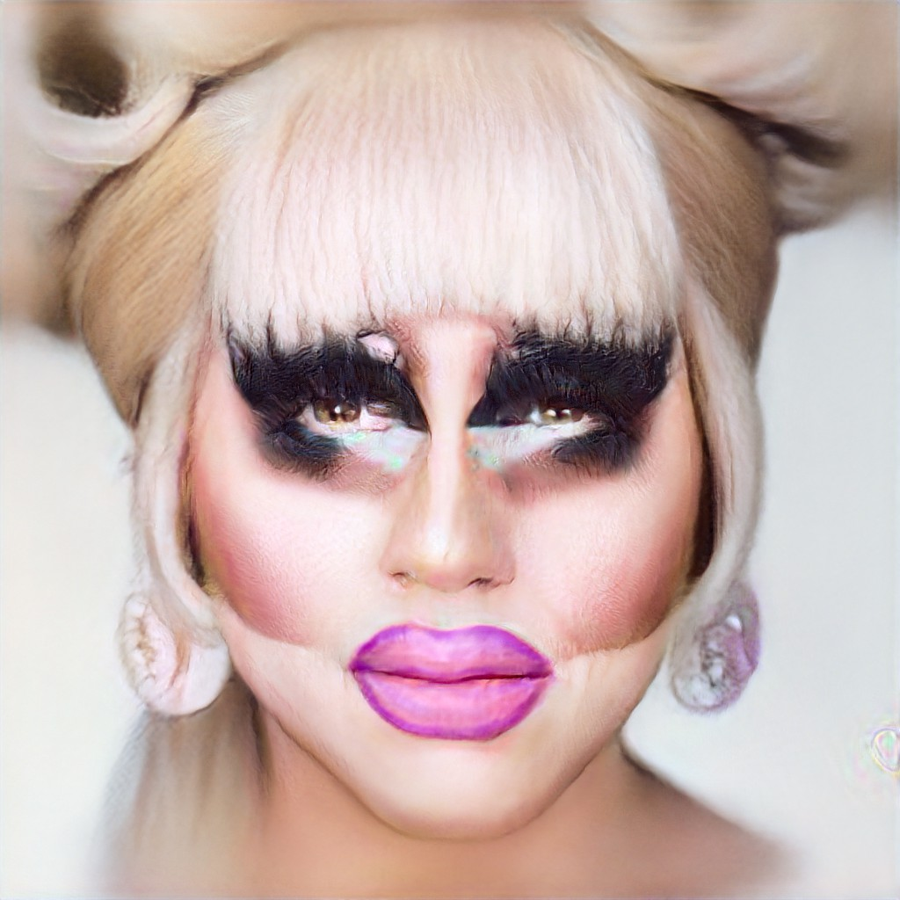
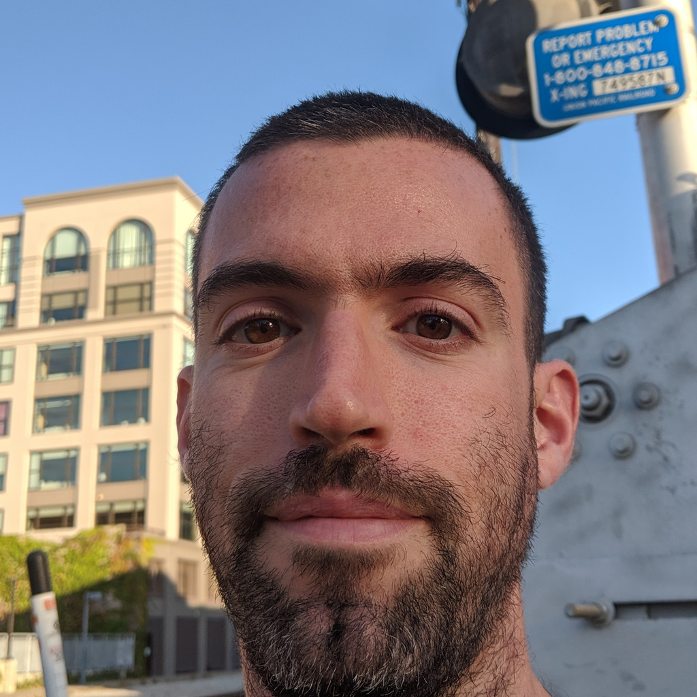

# Drag makeovers, via AI, using StyleGAN! ## Systems analysis from the art studio ### Lee Butterman he/him, !!Con West, 2020 hi@leebutterman.com<br>github.com/lsb<br>twitter.com/leebutterman --- # StyleGAN + Flickr Faces High Quality powers <a href="https://thispersondoesnotexist.com">thispersondoesnotexist.com</a>! <iframe src="https://thispersondoesnotexist.com" width="100%" height="75%" style="overflow: hidden;"></iframe> --- # StyleGAN (+ ecosystem) is flexible enough to support drag queen makeovers out of the box # Try it yourself with leebutterman.com/facemath ! # How to reduce the amount of work required to be that flexible, though? Some leverage points --- # StyleGAN * generative adversarial network architecture, based on style transfer * learns, unsupervised, to separate disentangled high-level attributes * 18 levels of increasingly fine features * 512 features/level * if trained on faces: pose, identity, eyes * smooth interpolation in this 9000-dimensional space * highly accessible code (Github), training data (Flickr Faces High Quality), pre-trained model (1 week/DGX-2 @ $25/hr) --- # Mixing features is possible! 3 faces' coarse features × 5 faces' fine features: --- # Flickr Faces High Quality * 70k Flickr Faces, 1024¬≤ RGB, permissive licenses * Images aligned and cropped with dlib * Pruned out statues/paintings/photos of photos by Mechanical Turk + "various automatic filters" * Acknowledged bias: uploaded to Flickr, permissive licenses, dlib facial detection thinks it is a face * _‚Äúcontains considerable variation in terms of age, ethnicity and image background‚Äù_, _‚Äúgood coverage of accessories such as eyeglasses, sunglasses, hats, etc.‚Äù_ <img src="./ffhq7.jpg" width="100%"> --- # StyleGAN Encoding * Many forks from github.com/Puzer/stylegan-encoder * github.com/lsb/stylegan2 forks off of github.com/pbaylies/stylegan2, etc 1. Register/crop faces in input (with dlib) 2. Choose a loss function (absolute difference from the zero-face, pixel difference, perceptual loss from VGG/MS-SIM/etc, and more) 3. Descend the gradient and optimize! --- # The zero-face * Avoid glitch art: keep features small/close to 0  --- # Adversarial Poinsettia Fascinator <img src="./aligned-ezra-seven-eyes.jpg" width="48.6823%"> * Face registration+cropping is inexact * gets confused by hair, outfits, adornment --- # Dina Martina's face does not register <img src="./aligned-ezra-seven-eyes.jpg" width="48.6823%"><br> Asymmetric lipstick, underexposed hair, overexposed d√©colletage, industrial-holiday-cheer gift bows, head-tinsel, dress-tinsel, horror vacui, large DoF, faceless --- # Some faces for testing/training/etc github.com/lsb/queer-faces (PRs welcome!) <div> <img src='aquaria-dragcon-la_01_29.jpg' width=11%><img src='bianca-del-rio_01_29.jpg' width=11%><img src='bob_tdq1_01_29.jpg' width=11%><img src='bob_tdq2_01_29.jpg' width=11%><img src='bob_tdq3_01_29.jpg' width=11%><img src='bob_tdq4_01_29.jpg' width=11%><img src='brian-firkus2_01_29.jpg' width=11%><img src='david-bowie-open_01_29.jpg' width=11%><img src='eddie-izzard2_01_29.jpg' width=11%><img src='eddie-izzard6_01_29.jpg' width=11%><img src='harvey-milk-portrait_01_29.jpg' width=11%><img src='kathy-kozachenko_02_29.jpg' width=11%><img src='laxmi-narayan-tripathi2_01_29.jpg' width=11%><img src='lsb2_01_29.jpg' width=11%><img src='lsb3_01_29.jpg' width=11%><img src='lsb5_01_29.jpg' width=11%><img src='rupaul_02_29.jpg' width=11%><img src='trixie-mattel-2_01_29.jpg' width=11%> <!-- (w/ duplicates, registration errors) --> </div> --- # Œîloss/Œît, per 0-face loss: <img src="./stylegan-encoding-losses.png" width="45%"> --- # Encoding results * Œîloss / Œît ‚àù conformity to training data * usable: self-assess genderqueer performance * who assesses? misusable! * FLOPS, non-conformity: expensive * Lowest 2 losses: false + face registrations * _lsb1_ meant to be more neutral than _2_ or _3_ * _lsb1_, _4_, _5_ meant to be neutral; _4_, _5_: difficult background * Tough to model Billy Porter's Sun God look, and Bob the Drag Quen's blue wig / hoop earrings / snarl * Hands on a face can come from the background, and not any humanoid body part: see _roxane-gay_01_ * The smoking water pistol in _bob-tdq2_01_ seems to take the place of an earring --- # Exponentially-sped-up encodings: <div class='wrapper' style='padding:0;width:30%;display:inline-block'><video controls style='height:100%;width:100%'><source src='/assets/zero_to_lsb5_01.mp4'></video></div> <div class='wrapper' style='padding:0;width:30%;display:inline-block'><video controls style='height:100%;width:100%'><source src='/assets/zero_to_porter_01.mp4'></video></div> <div class='wrapper' style='padding:0;width:30%;display:inline-block'><video controls style='height:100%;width:100%'><source src='/assets/zero_to_bob_tdq2_01.mp4'></video></div> <div class='wrapper' style='padding:0;width:30%;display:inline-block'><video controls style='height:100%;width:100%'><source src='/assets/zero_to_bob_tdq3_01.mp4'></video></div> <div class='wrapper' style='padding:0;width:30%;display:inline-block'><video controls style='height:100%;width:100%'><source src='/assets/zero_to_roxane-gay_01.mp4'></video></div> <div class='wrapper' style='padding:0;width:30%;display:inline-block'><video controls style='height:100%;width:100%'><source src='/assets/zero_to_trixie-mattel-2_01.mp4'></video></div> --- # Advanced vector-space manipulations * StyleGAN advertises high-quality interpolation: ✓ * Puzer/stylegan-encoder: 3 directions * "age" (youth), "gender" (butch/femme), "smile" * Performer in / out of costume? Drag makeup tutorial! * Requires realistic encodings * Requires continuity through latent space * +makeover direction implies -makeover! * negative direction less intuitive --- # ¬± makeovers <div style="margin-bottom:0.1em"> ¬± ‚Öî ( - ) ‚âà <video controls style="vertical-align:middle;padding:0;width:15%;height:15%"><source src="/assets/lsb5-plus-trixie-minus-brian.mp4"></video></div> <div style="margin-bottom:0.1em"> ¬± ¬Ω ( - ) ‚âà <video controls style="vertical-align:middle;padding:0;width:15%;height:15%"><source src="/assets/lsb1-plus-trixie-minus-brian.mp4"></video></div> <div style="margin-bottom:0.1em"> ¬± ‚Öì ( <img src="bob_tdq2_01.jpg" width="15%" style="opacity:5%"> - <img src="caldwell-tidicue-bob-tdq_01.jpg" width="15%" style="opacity:5%"> ) ‚âà <video controls style="vertical-align:middle;padding:0;width:15%;height:15%"><source src="/assets/lsb5-plus-bob2-minus-caldwell1.mp4"></video></div> --- # ¬± makeovers <div style="margin-bottom:0.1em"> ¬± ‚Öî ( - ) ‚âà <video controls style="vertical-align:middle;padding:0;width:15%;height:15%"><source src="/assets/lsb5-plus-trixie-minus-brian.mp4"></video></div> <div style="margin-bottom:0.1em"> ¬± ¬Ω ( - ) ‚âà <video controls style="vertical-align:middle;padding:0;width:15%;height:15%"><source src="/assets/lsb1-plus-trixie-minus-brian.mp4"></video></div> <div style="margin-bottom:0.1em"> ¬± ‚Öì ( <img src="bob_tdq2_01.jpg" width="15%"> - <img src="caldwell-tidicue-bob-tdq_01.jpg" width="15%"> ) ‚âà <video controls style="vertical-align:middle;padding:0;width:15%;height:15%"><source src="/assets/lsb5-plus-bob2-minus-caldwell1.mp4"></video></div> --- # Large-scale impact? * Significant effort (curating datasets, provisioning machines, tweaking hyperparameters, rerunning experiments, etc) * Text-to-speech voices (100s in MBROLA, 180 in Google Cloud Text To Speech) are either male or female * California state id more gender-diverse! * Increased rate of research in AI * homophobia whack-a-mole ineffective * analyze the field as a system --- # Meadows' 12 Leverage Points * scale of places to intervene in a system * leverage --- # Meadows' 12 Leverage Points <ol reversed start=12> <li>Constants, parameters (taxes/subsidies)<br>Tweak hyperparameters</li> <li>Buffer sizes<br>Re-build StyleGAN facial models, stylegan-encoder notebooks with more inclusive training data</li> <li>Structure of material stocks/flows (transport network, pop age distribution)<br>Use diverse datasets, diverse hiring practices</li> <li>Delay per rate of change<br>Run continuous integration benchmarks of queer testing data to assess inclusion</li> </ol> --- # Meadows' 12 Leverage Points <ol reversed start=8 end=6> <li>Slow - feedback loops<br>File PRs to add inclusion</li> <li>Slow + feedback loops<br>File PRs to fix bugs and add features in inclusive projects, but not to the exclusion or abandonment of other projects</li> <li>Structure of information flow<br>Raise awareness of issues of inclusion</li> <li>System rules (incentives, punishments)<br>Amplify voices raising awareness<br>Put on some adversarial fashion to insert junk snippets from the 4th Amendment into license plate scanners driving around</li> </ol> --- # Meadows' 12 Leverage Points <ol reversed start=8> <li>Slow - feedback loops<br>File PRs to add inclusion</li> <li>Slow + feedback loops<br>File PRs to fix bugs and add features in inclusive projects, but not to the exclusion or abandonment of other projects</li> <li>Structure of information flow<br>Raise awareness of issues of inclusion <span style="color: red">hi</span></li> <li>System rules (incentives, punishments)<br>Amplify voices raising awareness <span style="color: red">♥ u !!Con üôè</span><br>Put on some adversarial fashion to insert junk snippets from the 4th Amendment into license plate scanners driving around</li> </ol> --- # Meadows' 12 Leverage Points <ol reversed> <li>Evolve/self-organize system structure<br>Culture of open data, reproducible results, oversight</li> <li>Goal of the system<br>Change the goal of AI to be more inclusive and ethical</li> <li>Mindset/paradigm of the system<br>Repeatedly challenge anomalies/failures of foundational assumptions <i>(source of training data? widespread use of human benchmarks? freedom to run the program for <i>ANY</i> purpose? impacts on sensitive groups?)</i></li> <li>Power to transcend paradigms<br>Teach people to code, lower cost of compute, help decentralize advancement of queer liberation</li> </ol> --- # Meadows' 12 Leverage Points # # BE GAY DO CRIMES --- # Thank you! # I'm looking for collaborators! hi@leebutterman.com<br>github.com/lsb<br>twitter.com/leebutterman * github.com/lsb/stylegan2 * leebutterman.com/queering-ai * leebutterman.com/facemath --- class: tinylist # References 1. Bob the Drag Queen. (2018) Makeup tutorial: `https://www.youtube.com/watch?v=BXVhC4hVY8A` 1. Carbonell, J. (2019) Our AI Ethics Pledge at Akamedy.ai and Saturdays.ai. `https://medium.com/saturdays-ai/our-ai-ethics-pledge-at-akademy-ai-8a320e68bfd7` 1. CarlGustav, et al. (2013) Get tagged by a racist AI for free and fun. `https://forums.somethingawful.com/showthread.php?threadid=3884409` 1. Future of Life Institute. (2018) Lethal Autonomous Weapons Pledge. `https://futureoflife.org/lethal-autonomous-weapons-pledge/` 1. Google AI. (2018) AI at Google: Our Principles. `https://ai.google/principles` 1. Google Cloud Text to Speech. (2019) Supported voices and languages. `https://cloud.google.com/text-to-speech/docs/voices` 1. Imagenet. (2016) API Documentation. `http://image-net.org/download-API` 1. Karras, T., Laine, S. and Aila, T. (2018) A Style-Based Generator Architecture for Generative Adverarial Networks. `http://stylegan.xyz/paper` 1. Kyle, J. (2018) Add text to MIT License banning ICE collaborators. `https://github.com/lerna/lerna/pull/1616` 1. Leonard, Z. (1992) I want a president. `http://www.lttr.org/journal/5/i-want-a-president` 1. Livingston, J. (1990) Paris is Burning. United States: Off White Productions. 1. Martina, D. (2019) Photos. `https://dinamartina.com/photos/` 1. Mattel, Trixie. (2016-2019) Makeup tutorials: `https://www.youtube.com/watch?v=nZTcKxCqgSU`, `https://www.youtube.com/watch?v=yFi-rZ4WJdw`, `https://www.youtube.com/watch?v=MzaEd7JtjO8`, `https://www.youtube.com/watch?v=4MXwE7HXGDU`, `https://www.youtube.com/watch?v=KOhamgj62jQ`, `https://www.youtube.com/watch?v=aik0vuQs9Qs`. 1. Meadows, D. (1999) Leverage Points: Places to Intervene in a System. Hartland, VT: Sustainability Institute. `http://donellameadows.org/wp-content/userfiles/Leverage_Points.pdf` 1. MBROLA. (2019) MBROLA-voices. `https://github.com/mbrola/MBROLA-voices` 1. Mufson, B. (2016) Why "I Want a Dyke for President" is more relevant than ever. `https://www.vice.com/en_us/article/78ey59/i-want-a-dyke-for-president-high-line` 1. Nikitko, D. (2019) StyleGAN Encoder. `https://github.com/Puzer/stylegan-encoder` 1. Princeton University. (2010) About Wordnet. `https://wordnet.princeton.edu/` 1. RuPaul, et al. (2009-present) Ru Paul's Drag Race. United States: World of Wonder. 1. Schoeller, M. (2019) The Most Powerful Drag Queens in America. `https://www.vulture.com/2019/06/most-powerful-drag-queens-in-america-ranked.html` 1. State of California Deptartment of Motor Vehicles. (2019) Gender Identity (Female, Male, or Nonbinary). `https://www.dmv.ca.gov/portal/dmv/detail/dl/gender_id` 1. van Kemenade, P. (2019) ML x GLAM. `https://slides.com/phivk/mplusai#/15` 1. Wang, P. This Person Does Not Exist. `https://thispersondoesnotexist.com`